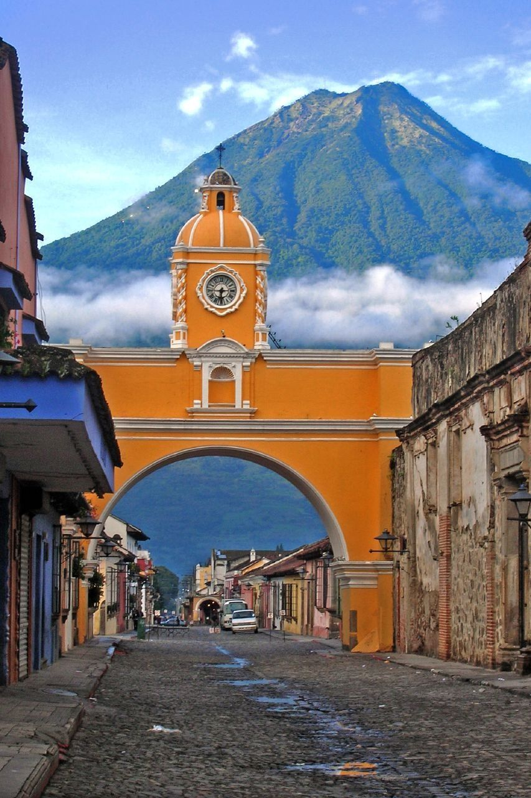

Fotografiar el Arco de Santa Catalina con el Volcán de Agua de fondo, puede ser un hermoso recuerdo cuando visites antigua Guatemala.

Subir al Cerro de la Cruz en Antigua Guatemala es una actividad rápida y gratuita. Puedes llegar a pie en 15 a 25 minutos desde el centro, o en vehículo/tuk-tuk en unos 10 minutos.
La ruta estándar de 2 días y 1 noche inicia en la Aldea La Soledad y toma entre 5 y 8 horas de ascenso hasta el campamento base, desde donde se observa la actividad constante del Volcán de Fuego.
Aprende sobre el proceso del cacao desde la semilla hasta la barra en talleres interactivos.
Un lugar excelente para comprar textiles, cerámica, jade y probar dulces típicos antigüeños.
Varias fincas cercanas ofrecen recorridos guiados para aprender sobre el proceso del café de altura.